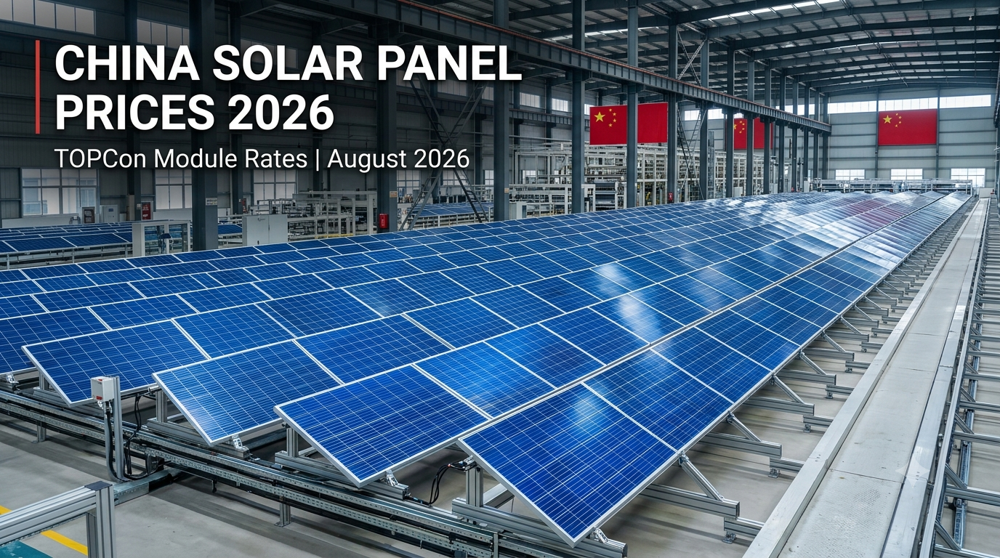
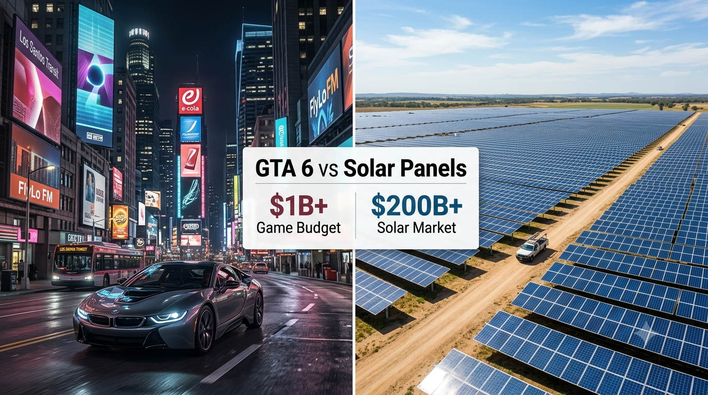

U.S. Solar News
U.S. Restricts Certain Foreign-Made Power Equipment
What the August 26, 2026 executive order could mean for qualifying grid-connected solar inverters, battery storage and related equipment.
Read article →Solar industry news, U.S. grid developments, module-market developments, price movements and important stories affecting solar buyers and the global PV market.
What the August 26, 2026 executive order could mean for qualifying grid-connected solar inverters, battery storage and related equipment.
Read article →
TOPCon module price indicators, export values and the possible impact on global solar markets.
Read article →Why older and lower-wattage module inventory can move into export markets as manufacturers update product lines.
Read article →
A financial-scale comparison between GTA 6 estimates and the global solar PV industry.
Read article →